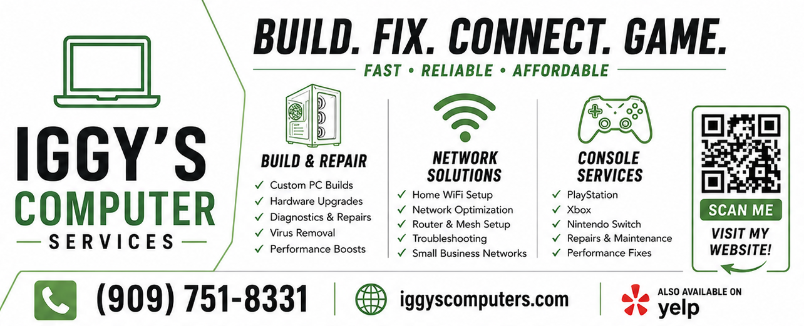

Honest and affordable services

At Iggy's Computer Services, we understand the importance of providing honest and affordable services to our customers. We believe that everyone deserves access to quality computer repair and support, regardless of their budget. That's why we strive to offer competitive pricing without compromising on the quality of our work. Our team of experienced technicians is dedicated to diagnosing and resolving your computer issues efficiently and effectively, ensuring that you get the best value for your money. Whether you need a simple virus removal or a complex hardware repair, you can trust us to provide transparent pricing and reliable service every time.